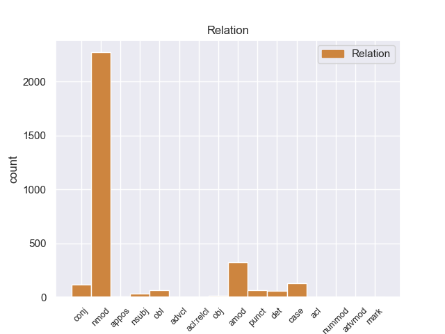
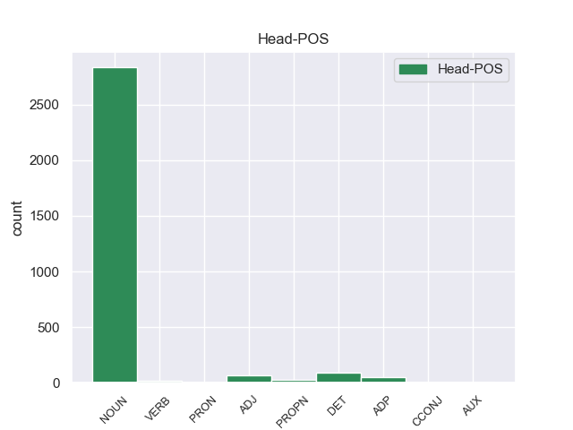
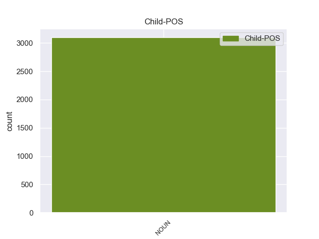

Distribution of features within this leaf



Agreement Rules sorted by frequency.
- When the dependent token is the nominal modifier(nmod) of the head token, and the dependent token is NOUN.
1 A _ _ _ _ 0 _ _ _
2 continuación _ _ _ _ 0 _ _ _
3 , _ _ _ _ 0 _ _ _
4 sonarán _ _ _ _ 0 _ _ _
5 los _ _ _ _ 0 _ _ _
6 ritmos _ _ _ _ 0 _ _ _
7 más _ _ _ _ 0 _ _ _
8 intensos _ _ _ _ 0 _ _ _
9 de _ _ _ _ 0 _ _ _
10 los _ _ _ _ 0 _ _ _
11 llanos _ _ _ _ 0 _ _ _
12 interpretados _ _ _ _ 0 _ _ _
13 por _ _ _ _ 0 _ _ _
14 una _ _ _ _ 0 _ _ _
15 agrupación _ _ _ _ 0 _ _ _
16 que _ _ _ _ 0 _ _ _
17 romperá _ _ _ _ 0 _ _ _
18 esquemas _ _ _ _ 0 _ _ _
19 : _ _ _ _ 0 _ _ _
20 el _ _ _ _ 0 _ _ _
21 Ensamble _ _ _ _ 0 _ _ _
22 de _ _ _ _ 0 _ _ _
23 Arpas _ _ _ _ 0 _ _ _
24 de _ _ _ _ 0 _ _ _
25 la _ _ _ _ 0 _ _ _
26 Orquesta orquesta NOUN _ Gender=Fem|Number=Sing 0 _ _ _
27 de _ _ _ _ 0 _ _ _
28 Música _ _ _ _ 0 _ _ _
29 Popular _ _ _ _ 0 _ _ _
30 de _ _ _ _ 0 _ _ _
31 el _ _ _ _ 0 _ _ _
32 Estado _ _ _ _ 0 _ _ _
33 Guárico _ _ _ _ 0 _ _ _
34 , _ _ _ _ 0 _ _ _
35 integrado _ _ _ _ 0 _ _ _
36 por _ _ _ _ 0 _ _ _
37 14 _ _ _ _ 0 _ _ _
38 ejecutantes _ _ _ _ 0 _ _ _
39 , _ _ _ _ 0 _ _ _
40 todos _ _ _ _ 0 _ _ _
41 formados _ _ _ _ 0 _ _ _
42 por _ _ _ _ 0 _ _ _
43 El _ _ _ _ 0 _ _ _
44 Sistema _ _ _ _ 0 _ _ _
45 , _ _ _ _ 0 _ _ _
46 siendo _ _ _ _ 0 _ _ _
47 algunos _ _ _ _ 0 _ _ _
48 de _ _ _ _ 0 _ _ _
49 ellos _ _ _ _ 0 _ _ _
50 ganadores _ _ _ _ 0 _ _ _
51 de _ _ _ _ 0 _ _ _
52 el _ _ _ _ 0 _ _ _
53 reconocido _ _ _ _ 0 _ _ _
54 Festival _ _ _ _ 0 _ _ _
55 Internacional _ _ _ _ 0 _ _ _
56 de _ _ _ _ 0 _ _ _
57 Arpas _ _ _ _ 0 _ _ _
58 Infantil _ _ _ _ 0 _ _ _
59 y _ _ _ _ 0 _ _ _
60 Adultos _ _ _ _ 0 _ _ _
61 de _ _ _ _ 0 _ _ _
62 Villavicencio villavicencio NOUN _ Gender=Fem|Number=Sing 26 nmod _ _
63 , _ _ _ _ 0 _ _ _
64 Colombia _ _ _ _ 0 _ _ _
65 . _ _ _ _ 0 _ _ _
1 La _ _ _ _ 0 _ _ _
2 Diputación _ _ _ _ 0 _ _ _
3 de _ _ _ _ 0 _ _ _
4 Valencia _ _ _ _ 0 _ _ _
5 ha _ _ _ _ 0 _ _ _
6 decidido _ _ _ _ 0 _ _ _
7 dar _ _ _ _ 0 _ _ _
8 el _ _ _ _ 0 _ _ _
9 salto _ _ _ _ 0 _ _ _
10 a _ _ _ _ 0 _ _ _
11 las _ _ _ _ 0 _ _ _
12 redes _ _ _ _ 0 _ _ _
13 sociales _ _ _ _ 0 _ _ _
14 y _ _ _ _ 0 _ _ _
15 cuenta _ _ _ _ 0 _ _ _
16 , _ _ _ _ 0 _ _ _
17 a _ _ _ _ 0 _ _ _
18 partir _ _ _ _ 0 _ _ _
19 de _ _ _ _ 0 _ _ _
20 hoy _ _ _ _ 0 _ _ _
21 , _ _ _ _ 0 _ _ _
22 con _ _ _ _ 0 _ _ _
23 un _ _ _ _ 0 _ _ _
24 blog _ _ _ _ 0 _ _ _
25 y _ _ _ _ 0 _ _ _
26 un _ _ _ _ 0 _ _ _
27 perfil _ _ _ _ 0 _ _ _
28 propio _ _ _ _ 0 _ _ _
29 en _ _ _ _ 0 _ _ _
30 las _ _ _ _ 0 _ _ _
31 principales _ _ _ _ 0 _ _ _
32 redes _ _ _ _ 0 _ _ _
33 sociales _ _ _ _ 0 _ _ _
34 , _ _ _ _ 0 _ _ _
35 con _ _ _ _ 0 _ _ _
36 los _ _ _ _ 0 _ _ _
37 que _ _ _ _ 0 _ _ _
38 pretende _ _ _ _ 0 _ _ _
39 establecer _ _ _ _ 0 _ _ _
40 una _ _ _ _ 0 _ _ _
41 comunicación comunicación NOUN _ Gender=Fem|Number=Sing 0 _ _ _
42 directa directa NOUN _ Gender=Fem|Number=Sing 41 amod _ _
43 con _ _ _ _ 0 _ _ _
44 los _ _ _ _ 0 _ _ _
45 ciudadanos _ _ _ _ 0 _ _ _
46 . _ _ _ _ 0 _ _ _
1 La _ _ _ _ 0 _ _ _
2 Organización organización NOUN _ Gender=Masc|Number=Sing 9 case _ _
3 Musical _ _ _ _ 0 _ _ _
4 Quintero _ _ _ _ 0 _ _ _
5 Clásico _ _ _ _ 0 _ _ _
6 , _ _ _ _ 0 _ _ _
7 es _ _ _ _ 0 _ _ _
8 una _ _ _ _ 0 _ _ _
9 Organización organización NOUN _ Gender=Masc|Number=Sing 0 _ _ _
10 especializada _ _ _ _ 0 _ _ _
11 en _ _ _ _ 0 _ _ _
12 conciertos _ _ _ _ 0 _ _ _
13 de _ _ _ _ 0 _ _ _
14 cámara _ _ _ _ 0 _ _ _
15 y _ _ _ _ 0 _ _ _
16 representación _ _ _ _ 0 _ _ _
17 de _ _ _ _ 0 _ _ _
18 diferentes _ _ _ _ 0 _ _ _
19 agrupaciones _ _ _ _ 0 _ _ _
20 camerísticas _ _ _ _ 0 _ _ _
21 únicas _ _ _ _ 0 _ _ _
22 de _ _ _ _ 0 _ _ _
23 su _ _ _ _ 0 _ _ _
24 género _ _ _ _ 0 _ _ _
25 en _ _ _ _ 0 _ _ _
26 Colombia _ _ _ _ 0 _ _ _
27 , _ _ _ _ 0 _ _ _
28 como _ _ _ _ 0 _ _ _
29 la _ _ _ _ 0 _ _ _
30 Orquesta _ _ _ _ 0 _ _ _
31 de _ _ _ _ 0 _ _ _
32 Cámara _ _ _ _ 0 _ _ _
33 COLOMBOEUROPEA _ _ _ _ 0 _ _ _
34 , _ _ _ _ 0 _ _ _
35 el _ _ _ _ 0 _ _ _
36 CONJUNTO _ _ _ _ 0 _ _ _
37 CLÁSICO _ _ _ _ 0 _ _ _
38 ROMÁNTICO _ _ _ _ 0 _ _ _
39 , _ _ _ _ 0 _ _ _
40 Conjunto _ _ _ _ 0 _ _ _
41 de _ _ _ _ 0 _ _ _
42 Música _ _ _ _ 0 _ _ _
43 Antigua _ _ _ _ 0 _ _ _
44 HEMIOLA _ _ _ _ 0 _ _ _
45 y _ _ _ _ 0 _ _ _
46 a _ _ _ _ 0 _ _ _
47 la _ _ _ _ 0 _ _ _
48 prestigiosa _ _ _ _ 0 _ _ _
49 Coral _ _ _ _ 0 _ _ _
50 REGINA _ _ _ _ 0 _ _ _
51 MARÍA _ _ _ _ 0 _ _ _
52 . _ _ _ _ 0 _ _ _
1 En _ _ _ _ 0 _ _ _
2 este _ _ _ _ 0 _ _ _
3 poemario _ _ _ _ 0 _ _ _
4 místico _ _ _ _ 0 _ _ _
5 y _ _ _ _ 0 _ _ _
6 nocturno nocturno NOUN _ Gender=Masc|Number=Sing 30 conj _ _
7 se _ _ _ _ 0 _ _ _
8 canta _ _ _ _ 0 _ _ _
9 a _ _ _ _ 0 _ _ _
10 la _ _ _ _ 0 _ _ _
11 muerte _ _ _ _ 0 _ _ _
12 y _ _ _ _ 0 _ _ _
13 se _ _ _ _ 0 _ _ _
14 identifica _ _ _ _ 0 _ _ _
15 a _ _ _ _ 0 _ _ _
16 la _ _ _ _ 0 _ _ _
17 amada _ _ _ _ 0 _ _ _
18 con _ _ _ _ 0 _ _ _
19 los _ _ _ _ 0 _ _ _
20 misterios _ _ _ _ 0 _ _ _
21 de _ _ _ _ 0 _ _ _
22 el _ _ _ _ 0 _ _ _
23 cristianismo _ _ _ _ 0 _ _ _
24 , _ _ _ _ 0 _ _ _
25 y _ _ _ _ 0 _ _ _
26 el _ _ _ _ 0 _ _ _
27 misticismo _ _ _ _ 0 _ _ _
28 de _ _ _ _ 0 _ _ _
29 el _ _ _ _ 0 _ _ _
30 viaje viaje NOUN _ Gender=Masc|Number=Sing 0 _ _ _
31 de _ _ _ _ 0 _ _ _
32 la _ _ _ _ 0 _ _ _
33 prometida _ _ _ _ 0 _ _ _
34 muerta _ _ _ _ 0 _ _ _
35 por _ _ _ _ 0 _ _ _
36 las _ _ _ _ 0 _ _ _
37 regiones _ _ _ _ 0 _ _ _
38 de _ _ _ _ 0 _ _ _
39 la _ _ _ _ 0 _ _ _
40 oscuridad _ _ _ _ 0 _ _ _
41 se _ _ _ _ 0 _ _ _
42 hace _ _ _ _ 0 _ _ _
43 patente _ _ _ _ 0 _ _ _
44 a _ _ _ _ 0 _ _ _
45 el _ _ _ _ 0 _ _ _
46 fundir _ _ _ _ 0 _ _ _
47 la _ _ _ _ 0 _ _ _
48 persona _ _ _ _ 0 _ _ _
49 de _ _ _ _ 0 _ _ _
50 la _ _ _ _ 0 _ _ _
51 amada _ _ _ _ 0 _ _ _
52 con _ _ _ _ 0 _ _ _
53 las _ _ _ _ 0 _ _ _
54 personas _ _ _ _ 0 _ _ _
55 de _ _ _ _ 0 _ _ _
56 la _ _ _ _ 0 _ _ _
57 Trinidad _ _ _ _ 0 _ _ _
58 cristiana _ _ _ _ 0 _ _ _
59 . _ _ _ _ 0 _ _ _
1 Hi hi NOUN _ Gender=Masc|Number=Sing 10 det _ _
2 - _ _ _ _ 0 _ _ _
3 5 _ _ _ _ 0 _ _ _
4 que _ _ _ _ 0 _ _ _
5 se _ _ _ _ 0 _ _ _
6 conoce _ _ _ _ 0 _ _ _
7 como _ _ _ _ 0 _ _ _
8 un _ _ _ _ 0 _ _ _
9 " _ _ _ _ 0 _ _ _
10 grupo grupo NOUN _ Gender=Masc|Number=Sing 0 _ _ _
11 de _ _ _ _ 0 _ _ _
12 pop _ _ _ _ 0 _ _ _
13 " _ _ _ _ 0 _ _ _
14 de _ _ _ _ 0 _ _ _
15 la _ _ _ _ 0 _ _ _
16 música _ _ _ _ 0 _ _ _
17 infantil _ _ _ _ 0 _ _ _
18 en _ _ _ _ 0 _ _ _
19 el _ _ _ _ 0 _ _ _
20 país _ _ _ _ 0 _ _ _
21 . _ _ _ _ 0 _ _ _
1 El _ _ _ _ 0 _ _ _
2 municipio _ _ _ _ 0 _ _ _
3 de _ _ _ _ 0 _ _ _
4 Weston _ _ _ _ 0 _ _ _
5 ( _ _ _ _ 0 _ _ _
6 en _ _ _ _ 0 _ _ _
7 inglés _ _ _ _ 0 _ _ _
8 : _ _ _ _ 0 _ _ _
9 Weston weston PROPN _ Gender=Masc|Number=Sing 0 _ _ _
10 Township township NOUN _ Gender=Masc|Number=Sing 9 punct _ _
11 ) _ _ _ _ 0 _ _ _
12 es _ _ _ _ 0 _ _ _
13 un _ _ _ _ 0 _ _ _
14 municipio _ _ _ _ 0 _ _ _
15 ubicado _ _ _ _ 0 _ _ _
16 en _ _ _ _ 0 _ _ _
17 el _ _ _ _ 0 _ _ _
18 condado _ _ _ _ 0 _ _ _
19 de _ _ _ _ 0 _ _ _
20 Platte _ _ _ _ 0 _ _ _
21 en _ _ _ _ 0 _ _ _
22 el _ _ _ _ 0 _ _ _
23 estado _ _ _ _ 0 _ _ _
24 estadounidense _ _ _ _ 0 _ _ _
25 de _ _ _ _ 0 _ _ _
26 Misuri _ _ _ _ 0 _ _ _
27 . _ _ _ _ 0 _ _ _
1 El _ _ _ _ 0 _ _ _
2 principal _ _ _ _ 0 _ _ _
3 sospechoso _ _ _ _ 0 _ _ _
4 en _ _ _ _ 0 _ _ _
5 el _ _ _ _ 0 _ _ _
6 caso _ _ _ _ 0 _ _ _
7 , _ _ _ _ 0 _ _ _
8 descrito _ _ _ _ 0 _ _ _
9 como _ _ _ _ 0 _ _ _
10 un _ _ _ _ 0 _ _ _
11 fanático _ _ _ _ 0 _ _ _
12 de _ _ _ _ 0 _ _ _
13 CSI _ _ _ _ 0 _ _ _
14 , _ _ _ _ 0 _ _ _
15 asesinó _ _ _ _ 0 _ _ _
16 a _ _ _ _ 0 _ _ _
17 su _ _ _ _ 0 _ _ _
18 madre _ _ _ _ 0 _ _ _
19 y _ _ _ _ 0 _ _ _
20 a _ _ _ _ 0 _ _ _
21 su _ _ _ _ 0 _ _ _
22 hija _ _ _ _ 0 _ _ _
23 , _ _ _ _ 0 _ _ _
24 luego _ _ _ _ 0 _ _ _
25 , _ _ _ _ 0 _ _ _
26 utilizó utilizó NOUN _ Gender=Masc|Number=Sing 0 _ _ _
27 cloro _ _ _ _ 0 _ _ _
28 para _ _ _ _ 0 _ _ _
29 lavar _ _ _ _ 0 _ _ _
30 sus _ _ _ _ 0 _ _ _
31 manos _ _ _ _ 0 _ _ _
32 llenas _ _ _ _ 0 _ _ _
33 de _ _ _ _ 0 _ _ _
34 sangre _ _ _ _ 0 _ _ _
35 y _ _ _ _ 0 _ _ _
36 cubrió _ _ _ _ 0 _ _ _
37 el _ _ _ _ 0 _ _ _
38 interior _ _ _ _ 0 _ _ _
39 de _ _ _ _ 0 _ _ _
40 su _ _ _ _ 0 _ _ _
41 auto _ _ _ _ 0 _ _ _
42 con _ _ _ _ 0 _ _ _
43 mantas _ _ _ _ 0 _ _ _
44 para _ _ _ _ 0 _ _ _
45 evitar _ _ _ _ 0 _ _ _
46 transferencias _ _ _ _ 0 _ _ _
47 en _ _ _ _ 0 _ _ _
48 el _ _ _ _ 0 _ _ _
49 transporte _ _ _ _ 0 _ _ _
50 de _ _ _ _ 0 _ _ _
51 los _ _ _ _ 0 _ _ _
52 cadáveres _ _ _ _ 0 _ _ _
53 , _ _ _ _ 0 _ _ _
54 que _ _ _ _ 0 _ _ _
55 luego _ _ _ _ 0 _ _ _
56 quemó _ _ _ _ 0 _ _ _
57 junto _ _ _ _ 0 _ _ _
58 con _ _ _ _ 0 _ _ _
59 su _ _ _ _ 0 _ _ _
60 ropa _ _ _ _ 0 _ _ _
61 y _ _ _ _ 0 _ _ _
62 colillas _ _ _ _ 0 _ _ _
63 de _ _ _ _ 0 _ _ _
64 cigarros _ _ _ _ 0 _ _ _
65 ( _ _ _ _ 0 _ _ _
66 temía _ _ _ _ 0 _ _ _
67 que _ _ _ _ 0 _ _ _
68 lo _ _ _ _ 0 _ _ _
69 descubrieran _ _ _ _ 0 _ _ _
70 por _ _ _ _ 0 _ _ _
71 su _ _ _ _ 0 _ _ _
72 ADN adn NOUN _ Gender=Masc|Number=Sing 26 obl _ _
73 en _ _ _ _ 0 _ _ _
74 ellos _ _ _ _ 0 _ _ _
75 ) _ _ _ _ 0 _ _ _
76 . _ _ _ _ 0 _ _ _
1 El _ _ _ _ 0 _ _ _
2 tubérculo _ _ _ _ 0 _ _ _
3 para _ _ _ _ 0 _ _ _
4 preparar _ _ _ _ 0 _ _ _
5 la _ _ _ _ 0 _ _ _
6 harina _ _ _ _ 0 _ _ _
7 debe _ _ _ _ 0 _ _ _
8 ser _ _ _ _ 0 _ _ _
9 recolectado recolectado ADJ _ Definite=Def|Gender=Fem|Number=Sing|PronType=Art 0 _ _ _
10 cuando _ _ _ _ 0 _ _ _
11 la _ _ _ _ 0 _ _ _
12 planta planta NOUN _ Gender=Fem|Number=Sing 9 nsubj _ _
13 está _ _ _ _ 0 _ _ _
14 recién _ _ _ _ 0 _ _ _
15 seca _ _ _ _ 0 _ _ _
16 después _ _ _ _ 0 _ _ _
17 de _ _ _ _ 0 _ _ _
18 la _ _ _ _ 0 _ _ _
19 floración _ _ _ _ 0 _ _ _
20 y _ _ _ _ 0 _ _ _
21 cuando _ _ _ _ 0 _ _ _
22 ha _ _ _ _ 0 _ _ _
23 soltado _ _ _ _ 0 _ _ _
24 las _ _ _ _ 0 _ _ _
25 semillas _ _ _ _ 0 _ _ _
26 . _ _ _ _ 0 _ _ _
1 Josef _ _ _ _ 0 _ _ _
2 Breuer _ _ _ _ 0 _ _ _
3 y _ _ _ _ 0 _ _ _
4 Sigmund _ _ _ _ 0 _ _ _
5 Freud _ _ _ _ 0 _ _ _
6 , _ _ _ _ 0 _ _ _
7 iniciadores _ _ _ _ 0 _ _ _
8 de _ _ _ _ 0 _ _ _
9 el _ _ _ _ 0 _ _ _
10 psicoanálisis _ _ _ _ 0 _ _ _
11 , _ _ _ _ 0 _ _ _
12 retomaron _ _ _ _ 0 _ _ _
13 este _ _ _ _ 0 _ _ _
14 concepto _ _ _ _ 0 _ _ _
15 en _ _ _ _ 0 _ _ _
16 sus _ _ _ _ 0 _ _ _
17 primeros _ _ _ _ 0 _ _ _
18 trabajos _ _ _ _ 0 _ _ _
19 , _ _ _ _ 0 _ _ _
20 y _ _ _ _ 0 _ _ _
21 denominaron _ _ _ _ 0 _ _ _
22 método método NOUN _ Gender=Masc|Number=Sing 61 obj _ _
23 catártico _ _ _ _ 0 _ _ _
24 a _ _ _ _ 0 _ _ _
25 la _ _ _ _ 0 _ _ _
26 expresión _ _ _ _ 0 _ _ _
27 o _ _ _ _ 0 _ _ _
28 remembranza _ _ _ _ 0 _ _ _
29 de _ _ _ _ 0 _ _ _
30 una _ _ _ _ 0 _ _ _
31 emoción _ _ _ _ 0 _ _ _
32 o _ _ _ _ 0 _ _ _
33 recuerdo _ _ _ _ 0 _ _ _
34 reprimido _ _ _ _ 0 _ _ _
35 durante _ _ _ _ 0 _ _ _
36 el _ _ _ _ 0 _ _ _
37 tratamiento _ _ _ _ 0 _ _ _
38 , _ _ _ _ 0 _ _ _
39 lo _ _ _ _ 0 _ _ _
40 que _ _ _ _ 0 _ _ _
41 generaría _ _ _ _ 0 _ _ _
42 un _ _ _ _ 0 _ _ _
43 " _ _ _ _ 0 _ _ _
44 desbloqueo _ _ _ _ 0 _ _ _
45 " _ _ _ _ 0 _ _ _
46 súbito _ _ _ _ 0 _ _ _
47 de _ _ _ _ 0 _ _ _
48 dicha _ _ _ _ 0 _ _ _
49 emoción _ _ _ _ 0 _ _ _
50 o _ _ _ _ 0 _ _ _
51 recuerdo _ _ _ _ 0 _ _ _
52 , _ _ _ _ 0 _ _ _
53 pero _ _ _ _ 0 _ _ _
54 con _ _ _ _ 0 _ _ _
55 un _ _ _ _ 0 _ _ _
56 impacto _ _ _ _ 0 _ _ _
57 duradero _ _ _ _ 0 _ _ _
58 ( _ _ _ _ 0 _ _ _
59 y _ _ _ _ 0 _ _ _
60 le _ _ _ _ 0 _ _ _
61 permitiría permitiría NOUN _ Gender=Masc|Number=Sing 0 _ _ _
62 luego _ _ _ _ 0 _ _ _
63 a _ _ _ _ 0 _ _ _
64 el _ _ _ _ 0 _ _ _
65 paciente _ _ _ _ 0 _ _ _
66 , _ _ _ _ 0 _ _ _
67 por _ _ _ _ 0 _ _ _
68 ejemplo _ _ _ _ 0 _ _ _
69 , _ _ _ _ 0 _ _ _
70 entender _ _ _ _ 0 _ _ _
71 mejor _ _ _ _ 0 _ _ _
72 dicha _ _ _ _ 0 _ _ _
73 emoción _ _ _ _ 0 _ _ _
74 o _ _ _ _ 0 _ _ _
75 evento _ _ _ _ 0 _ _ _
76 o _ _ _ _ 0 _ _ _
77 incluso _ _ _ _ 0 _ _ _
78 hablar _ _ _ _ 0 _ _ _
79 ampliamente _ _ _ _ 0 _ _ _
80 sobre _ _ _ _ 0 _ _ _
81 ello _ _ _ _ 0 _ _ _
82 ) _ _ _ _ 0 _ _ _
83 . _ _ _ _ 0 _ _ _
1 Dietilcarbamazina dietilcarbamazina NOUN _ Gender=Masc|Number=Sing 10 appos _ _
2 ( _ _ _ _ 0 _ _ _
3 DEC _ _ _ _ 0 _ _ _
4 ) _ _ _ _ 0 _ _ _
5 es _ _ _ _ 0 _ _ _
6 el _ _ _ _ 0 _ _ _
7 nombre _ _ _ _ 0 _ _ _
8 de _ _ _ _ 0 _ _ _
9 un _ _ _ _ 0 _ _ _
10 medicamento medicamento NOUN _ Gender=Masc|Number=Sing 0 _ _ _
11 antihelmíntico _ _ _ _ 0 _ _ _
12 , _ _ _ _ 0 _ _ _
13 derivado _ _ _ _ 0 _ _ _
14 de _ _ _ _ 0 _ _ _
15 la _ _ _ _ 0 _ _ _
16 piperazina _ _ _ _ 0 _ _ _
17 , _ _ _ _ 0 _ _ _
18 con _ _ _ _ 0 _ _ _
19 una _ _ _ _ 0 _ _ _
20 composición _ _ _ _ 0 _ _ _
21 química _ _ _ _ 0 _ _ _
22 muy _ _ _ _ 0 _ _ _
23 diferente _ _ _ _ 0 _ _ _
24 a _ _ _ _ 0 _ _ _
25 la _ _ _ _ 0 _ _ _
26 de _ _ _ _ 0 _ _ _
27 otros _ _ _ _ 0 _ _ _
28 desparasitantes _ _ _ _ 0 _ _ _
29 . _ _ _ _ 0 _ _ _
1 Debido _ _ _ _ 0 _ _ _
2 a _ _ _ _ 0 _ _ _
3 que _ _ _ _ 0 _ _ _
4 las _ _ _ _ 0 _ _ _
5 personas _ _ _ _ 0 _ _ _
6 con _ _ _ _ 0 _ _ _
7 acento _ _ _ _ 0 _ _ _
8 coreano _ _ _ _ 0 _ _ _
9 pronuncian _ _ _ _ 0 _ _ _
10 " _ _ _ _ 0 _ _ _
11 G _ _ _ _ 0 _ _ _
12 " _ _ _ _ 0 _ _ _
13 o _ _ _ _ 0 _ _ _
14 " _ _ _ _ 0 _ _ _
15 J _ _ _ _ 0 _ _ _
16 " _ _ _ _ 0 _ _ _
17 en _ _ _ _ 0 _ _ _
18 el _ _ _ _ 0 _ _ _
19 principio _ _ _ _ 0 _ _ _
20 de _ _ _ _ 0 _ _ _
21 las _ _ _ _ 0 _ _ _
22 palabras _ _ _ _ 0 _ _ _
23 de _ _ _ _ 0 _ _ _
24 manera _ _ _ _ 0 _ _ _
25 distinta _ _ _ _ 0 _ _ _
26 , _ _ _ _ 0 _ _ _
27 se _ _ _ _ 0 _ _ _
28 usó _ _ _ _ 0 _ _ _
29 15 _ _ _ _ 0 _ _ _
30 円 _ _ _ _ 0 _ _ _
31 50 _ _ _ _ 0 _ _ _
32 銭 _ _ _ _ 0 _ _ _
33 ( _ _ _ _ 0 _ _ _
34 jū _ _ _ _ 0 _ _ _
35 - _ _ _ _ 0 _ _ _
36 go _ _ _ _ 0 _ _ _
37 - _ _ _ _ 0 _ _ _
38 en _ _ _ _ 0 _ _ _
39 , _ _ _ _ 0 _ _ _
40 go _ _ _ _ 0 _ _ _
41 - _ _ _ _ 0 _ _ _
42 jū _ _ _ _ 0 _ _ _
43 - _ _ _ _ 0 _ _ _
44 sen _ _ _ _ 0 _ _ _
45 ) _ _ _ _ 0 _ _ _
46 y _ _ _ _ 0 _ _ _
47 が _ _ _ _ 0 _ _ _
48 ぎぐ ぎぐ NOUN _ Gender=Masc|Number=Sing 52 advcl _ _
49 げ _ _ _ _ 0 _ _ _
50 ご _ _ _ _ 0 _ _ _
51 ( _ _ _ _ 0 _ _ _
52 gagigugego gagigugego NOUN _ Gender=Masc|Number=Sing 0 _ _ _
53 ) _ _ _ _ 0 _ _ _
54 como _ _ _ _ 0 _ _ _
55 un _ _ _ _ 0 _ _ _
56 Shibboleth _ _ _ _ 0 _ _ _
57 . _ _ _ _ 0 _ _ _
1 El _ _ _ _ 0 _ _ _
2 sector sector NOUN _ Gender=Masc|Number=Sing 0 _ _ _
3 manufacturero _ _ _ _ 0 _ _ _
4 , _ _ _ _ 0 _ _ _
5 que _ _ _ _ 0 _ _ _
6 había _ _ _ _ 0 _ _ _
7 sido _ _ _ _ 0 _ _ _
8 el _ _ _ _ 0 _ _ _
9 gran _ _ _ _ 0 _ _ _
10 creador creador NOUN _ Gender=Masc|Number=Sing 2 acl:relcl _ _
11 de _ _ _ _ 0 _ _ _
12 empleos _ _ _ _ 0 _ _ _
13 en _ _ _ _ 0 _ _ _
14 el _ _ _ _ 0 _ _ _
15 comienzo _ _ _ _ 0 _ _ _
16 de _ _ _ _ 0 _ _ _
17 la _ _ _ _ 0 _ _ _
18 reactivación _ _ _ _ 0 _ _ _
19 , _ _ _ _ 0 _ _ _
20 perdió _ _ _ _ 0 _ _ _
21 el _ _ _ _ 0 _ _ _
22 mes _ _ _ _ 0 _ _ _
23 pasado _ _ _ _ 0 _ _ _
24 7.000 _ _ _ _ 0 _ _ _
25 empleos _ _ _ _ 0 _ _ _
26 , _ _ _ _ 0 _ _ _
27 mientras _ _ _ _ 0 _ _ _
28 que _ _ _ _ 0 _ _ _
29 el _ _ _ _ 0 _ _ _
30 sector _ _ _ _ 0 _ _ _
31 de _ _ _ _ 0 _ _ _
32 minería _ _ _ _ 0 _ _ _
33 y _ _ _ _ 0 _ _ _
34 maderero _ _ _ _ 0 _ _ _
35 ganó _ _ _ _ 0 _ _ _
36 7.000 _ _ _ _ 0 _ _ _
37 puestos _ _ _ _ 0 _ _ _
38 de _ _ _ _ 0 _ _ _
39 trabajo _ _ _ _ 0 _ _ _
40 . _ _ _ _ 0 _ _ _
1 El _ _ _ _ 0 _ _ _
2 número número NOUN _ Gender=Masc|Number=Sing 0 _ _ _
3 de _ _ _ _ 0 _ _ _
4 viviendas _ _ _ _ 0 _ _ _
5 iniciadas _ _ _ _ 0 _ _ _
6 hasta _ _ _ _ 0 _ _ _
7 2009 _ _ _ _ 0 _ _ _
8 registra _ _ _ _ 0 _ _ _
9 descensos _ _ _ _ 0 _ _ _
10 desde _ _ _ _ 0 _ _ _
11 2006 _ _ _ _ 0 _ _ _
12 , _ _ _ _ 0 _ _ _
13 cuando _ _ _ _ 0 _ _ _
14 todas _ _ _ _ 0 _ _ _
15 las _ _ _ _ 0 _ _ _
16 provincias _ _ _ _ 0 _ _ _
17 catalanas _ _ _ _ 0 _ _ _
18 llegaron _ _ _ _ 0 _ _ _
19 a _ _ _ _ 0 _ _ _
20 su _ _ _ _ 0 _ _ _
21 máximo _ _ _ _ 0 _ _ _
22 volumen _ _ _ _ 0 _ _ _
23 , _ _ _ _ 0 _ _ _
24 13.864 _ _ _ _ 0 _ _ _
25 pisos _ _ _ _ 0 _ _ _
26 en _ _ _ _ 0 _ _ _
27 el _ _ _ _ 0 _ _ _
28 caso _ _ _ _ 0 _ _ _
29 de _ _ _ _ 0 _ _ _
30 Lleida lleida NOUN _ Gender=Masc|Number=Sing 2 nummod _ _
31 . _ _ _ _ 0 _ _ _
1 Aunque _ _ _ _ 0 _ _ _
2 su _ _ _ _ 0 _ _ _
3 masa _ _ _ _ 0 _ _ _
4 es _ _ _ _ 0 _ _ _
5 aproximadamente _ _ _ _ 0 _ _ _
6 un _ _ _ _ 0 _ _ _
7 tercio tercio NOUN _ Gender=Masc|Number=Sing 0 _ _ _
8 de _ _ _ _ 0 _ _ _
9 la _ _ _ _ 0 _ _ _
10 de _ _ _ _ 0 _ _ _
11 el _ _ _ _ 0 _ _ _
12 Sol _ _ _ _ 0 _ _ _
13 , _ _ _ _ 0 _ _ _
14 su _ _ _ _ 0 _ _ _
15 radio _ _ _ _ 0 _ _ _
16 equivale _ _ _ _ 0 _ _ _
17 a _ _ _ _ 0 _ _ _
18 2,32 _ _ _ _ 0 _ _ _
19 veces _ _ _ _ 0 _ _ _
20 el _ _ _ _ 0 _ _ _
21 radio radio NOUN _ Gender=Masc|Number=Sing 7 acl _ _
22 solar _ _ _ _ 0 _ _ _
23 , _ _ _ _ 0 _ _ _
24 estando _ _ _ _ 0 _ _ _
25 situada _ _ _ _ 0 _ _ _
26 en _ _ _ _ 0 _ _ _
27 el _ _ _ _ 0 _ _ _
28 diagrama _ _ _ _ 0 _ _ _
29 de _ _ _ _ 0 _ _ _
30 Hertzsprung _ _ _ _ 0 _ _ _
31 - _ _ _ _ 0 _ _ _
32 Russell _ _ _ _ 0 _ _ _
33 por _ _ _ _ 0 _ _ _
34 encima _ _ _ _ 0 _ _ _
35 de _ _ _ _ 0 _ _ _
36 la _ _ _ _ 0 _ _ _
37 secuencia _ _ _ _ 0 _ _ _
38 principal _ _ _ _ 0 _ _ _
39 . _ _ _ _ 0 _ _ _
1 El _ _ _ _ 0 _ _ _
2 vacío _ _ _ _ 0 _ _ _
3 en _ _ _ _ 0 _ _ _
4 las _ _ _ _ 0 _ _ _
5 ventosas _ _ _ _ 0 _ _ _
6 o _ _ _ _ 0 _ _ _
7 por _ _ _ _ 0 _ _ _
8 medio _ _ _ _ 0 _ _ _
9 de _ _ _ _ 0 _ _ _
10 un _ _ _ _ 0 _ _ _
11 poco _ _ _ _ 0 _ _ _
12 de _ _ _ _ 0 _ _ _
13 estopa _ _ _ _ 0 _ _ _
14 o _ _ _ _ 0 _ _ _
15 de _ _ _ _ 0 _ _ _
16 papel _ _ _ _ 0 _ _ _
17 que _ _ _ _ 0 _ _ _
18 se _ _ _ _ 0 _ _ _
19 inflama _ _ _ _ 0 _ _ _
20 en _ _ _ _ 0 _ _ _
21 el _ _ _ _ 0 _ _ _
22 reservorio _ _ _ _ 0 _ _ _
23 a _ _ _ _ 0 _ _ _
24 fln _ _ _ _ 0 _ _ _
25 de _ _ _ _ 0 _ _ _
26 enrarecer _ _ _ _ 0 _ _ _
27 el _ _ _ _ 0 _ _ _
28 aire _ _ _ _ 0 _ _ _
29 que _ _ _ _ 0 _ _ _
30 contiene contiene NOUN _ Gender=Masc|Number=Sing 33 mark _ _
31 o _ _ _ _ 0 _ _ _
32 bien _ _ _ _ 0 _ _ _
33 sirviéndo sirviénd NOUN _ Gender=Masc|Number=Sing 0 _ _ _
34 se _ _ _ _ 0 _ _ _
35 para _ _ _ _ 0 _ _ _
36 este _ _ _ _ 0 _ _ _
37 objeto _ _ _ _ 0 _ _ _
38 ya _ _ _ _ 0 _ _ _
39 de _ _ _ _ 0 _ _ _
40 la _ _ _ _ 0 _ _ _
41 llama _ _ _ _ 0 _ _ _
42 de _ _ _ _ 0 _ _ _
43 una _ _ _ _ 0 _ _ _
44 bujía _ _ _ _ 0 _ _ _
45 , _ _ _ _ 0 _ _ _
46 ya _ _ _ _ 0 _ _ _
47 de _ _ _ _ 0 _ _ _
48 una _ _ _ _ 0 _ _ _
49 lámpara _ _ _ _ 0 _ _ _
50 de _ _ _ _ 0 _ _ _
51 alcohol _ _ _ _ 0 _ _ _
52 . _ _ _ _ 0 _ _ _
Disagree Examples:
1 Como _ _ _ _ 0 _ _ _
2 resultado resultado NOUN _ Gender=Masc|Number=Sing 0 _ _ _
3 de _ _ _ _ 0 _ _ _
4 la _ _ _ _ 0 _ _ _
5 intervención intervención NOUN _ Gender=Fem|Number=Sing 2 nmod _ _
6 sueca _ _ _ _ 0 _ _ _
7 , _ _ _ _ 0 _ _ _
8 se _ _ _ _ 0 _ _ _
9 aseguró _ _ _ _ 0 _ _ _
10 la _ _ _ _ 0 _ _ _
11 libertad _ _ _ _ 0 _ _ _
12 religiosa _ _ _ _ 0 _ _ _
13 para _ _ _ _ 0 _ _ _
14 los _ _ _ _ 0 _ _ _
15 protestantes _ _ _ _ 0 _ _ _
16 en _ _ _ _ 0 _ _ _
17 Europa _ _ _ _ 0 _ _ _
18 , _ _ _ _ 0 _ _ _
19 el _ _ _ _ 0 _ _ _
20 mayor _ _ _ _ 0 _ _ _
21 logro _ _ _ _ 0 _ _ _
22 político _ _ _ _ 0 _ _ _
23 de _ _ _ _ 0 _ _ _
24 Suecia _ _ _ _ 0 _ _ _
25 , _ _ _ _ 0 _ _ _
26 que _ _ _ _ 0 _ _ _
27 la _ _ _ _ 0 _ _ _
28 convirtió _ _ _ _ 0 _ _ _
29 en _ _ _ _ 0 _ _ _
30 abanderado _ _ _ _ 0 _ _ _
31 de _ _ _ _ 0 _ _ _
32 el _ _ _ _ 0 _ _ _
33 protestantismo _ _ _ _ 0 _ _ _
34 continental _ _ _ _ 0 _ _ _
35 durante _ _ _ _ 0 _ _ _
36 setenta _ _ _ _ 0 _ _ _
37 años _ _ _ _ 0 _ _ _
38 , _ _ _ _ 0 _ _ _
39 hasta _ _ _ _ 0 _ _ _
40 que _ _ _ _ 0 _ _ _
41 se _ _ _ _ 0 _ _ _
42 produjo _ _ _ _ 0 _ _ _
43 el _ _ _ _ 0 _ _ _
44 colapso _ _ _ _ 0 _ _ _
45 de _ _ _ _ 0 _ _ _
46 el _ _ _ _ 0 _ _ _
47 Sacro _ _ _ _ 0 _ _ _
48 Imperio _ _ _ _ 0 _ _ _
49 Romano _ _ _ _ 0 _ _ _
50 Germánico _ _ _ _ 0 _ _ _
51 . _ _ _ _ 0 _ _ _
1 Como _ _ _ _ 0 _ _ _
2 resultado _ _ _ _ 0 _ _ _
3 de _ _ _ _ 0 _ _ _
4 la _ _ _ _ 0 _ _ _
5 intervención _ _ _ _ 0 _ _ _
6 sueca _ _ _ _ 0 _ _ _
7 , _ _ _ _ 0 _ _ _
8 se _ _ _ _ 0 _ _ _
9 aseguró _ _ _ _ 0 _ _ _
10 la _ _ _ _ 0 _ _ _
11 libertad libertad NOUN _ Gender=Fem|Number=Sing 0 _ _ _
12 religiosa _ _ _ _ 0 _ _ _
13 para _ _ _ _ 0 _ _ _
14 los _ _ _ _ 0 _ _ _
15 protestantes _ _ _ _ 0 _ _ _
16 en _ _ _ _ 0 _ _ _
17 Europa _ _ _ _ 0 _ _ _
18 , _ _ _ _ 0 _ _ _
19 el _ _ _ _ 0 _ _ _
20 mayor _ _ _ _ 0 _ _ _
21 logro logro NOUN _ Gender=Masc|Number=Sing 11 appos _ _
22 político _ _ _ _ 0 _ _ _
23 de _ _ _ _ 0 _ _ _
24 Suecia _ _ _ _ 0 _ _ _
25 , _ _ _ _ 0 _ _ _
26 que _ _ _ _ 0 _ _ _
27 la _ _ _ _ 0 _ _ _
28 convirtió _ _ _ _ 0 _ _ _
29 en _ _ _ _ 0 _ _ _
30 abanderado _ _ _ _ 0 _ _ _
31 de _ _ _ _ 0 _ _ _
32 el _ _ _ _ 0 _ _ _
33 protestantismo _ _ _ _ 0 _ _ _
34 continental _ _ _ _ 0 _ _ _
35 durante _ _ _ _ 0 _ _ _
36 setenta _ _ _ _ 0 _ _ _
37 años _ _ _ _ 0 _ _ _
38 , _ _ _ _ 0 _ _ _
39 hasta _ _ _ _ 0 _ _ _
40 que _ _ _ _ 0 _ _ _
41 se _ _ _ _ 0 _ _ _
42 produjo _ _ _ _ 0 _ _ _
43 el _ _ _ _ 0 _ _ _
44 colapso _ _ _ _ 0 _ _ _
45 de _ _ _ _ 0 _ _ _
46 el _ _ _ _ 0 _ _ _
47 Sacro _ _ _ _ 0 _ _ _
48 Imperio _ _ _ _ 0 _ _ _
49 Romano _ _ _ _ 0 _ _ _
50 Germánico _ _ _ _ 0 _ _ _
51 . _ _ _ _ 0 _ _ _
1 Sé _ _ _ _ 0 _ _ _
2 de _ _ _ _ 0 _ _ _
3 buena _ _ _ _ 0 _ _ _
4 tinta _ _ _ _ 0 _ _ _
5 que _ _ _ _ 0 _ _ _
6 esta _ _ _ _ 0 _ _ _
7 empresa empresa NOUN _ Gender=Fem|Number=Sing 9 nsubj _ _
8 ha _ _ _ _ 0 _ _ _
9 desaparecido desaparecer VERB _ Gender=Masc|Number=Sing|Tense=Past|VerbForm=Part 0 _ _ _
10 . _ _ _ _ 0 _ _ _
1 Al _ _ _ _ 0 _ _ _
2 principio _ _ _ _ 0 _ _ _
3 , _ _ _ _ 0 _ _ _
4 su _ _ _ _ 0 _ _ _
5 foco _ _ _ _ 0 _ _ _
6 principal _ _ _ _ 0 _ _ _
7 era _ _ _ _ 0 _ _ _
8 el _ _ _ _ 0 _ _ _
9 cine cine NOUN _ Gender=Masc|Number=Sing 0 _ _ _
10 de _ _ _ _ 0 _ _ _
11 esta _ _ _ _ 0 _ _ _
12 región región NOUN _ Gender=Fem|Number=Sing 9 nmod _ SpaceAfter=No
13 . _ _ _ _ 0 _ _ _
1 Greenie _ _ _ _ 0 _ _ _
2 Linux _ _ _ _ 0 _ _ _
3 ( _ _ _ _ 0 _ _ _
4 o _ _ _ _ 0 _ _ _
5 simplemente _ _ _ _ 0 _ _ _
6 Greenie _ _ _ _ 0 _ _ _
7 ) _ _ _ _ 0 _ _ _
8 es _ _ _ _ 0 _ _ _
9 un _ _ _ _ 0 _ _ _
10 sistema _ _ _ _ 0 _ _ _
11 operativo _ _ _ _ 0 _ _ _
12 basado basado VERB _ Gender=Masc|Number=Sing|VerbForm=Part 0 _ _ _
13 en _ _ _ _ 0 _ _ _
14 la _ _ _ _ 0 _ _ _
15 popular _ _ _ _ 0 _ _ _
16 distribución distribución NOUN _ Gender=Fem|Number=Sing 12 obl _ _
17 Ubuntu _ _ _ _ 0 _ _ _
18 Linux _ _ _ _ 0 _ _ _
19 . _ _ _ _ 0 _ _ _